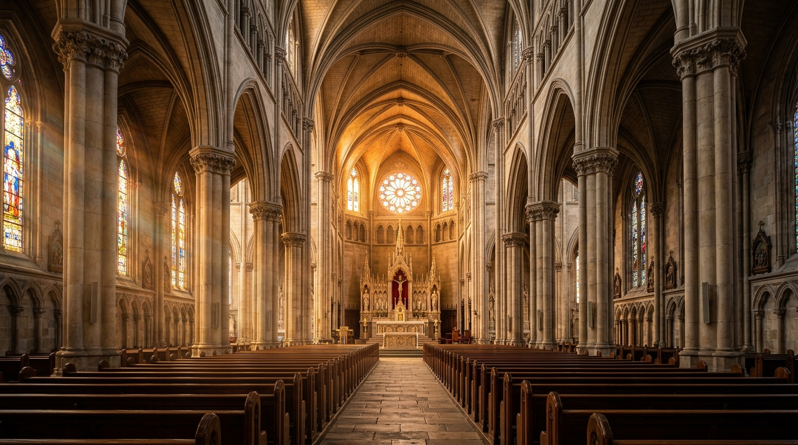
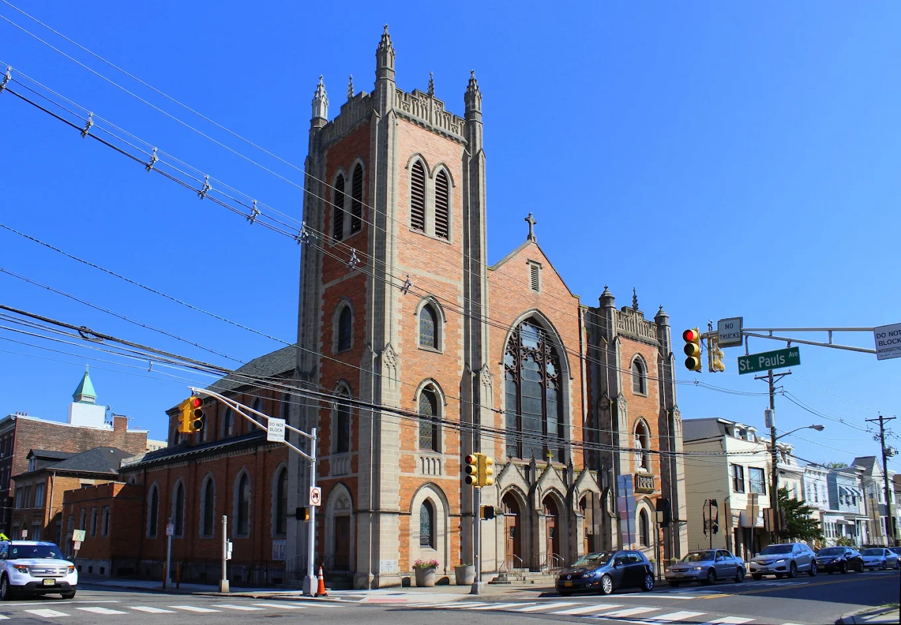

A Sanctuary of Faith in the Heart of the City
Open every day to parishioners, neighbors, and pilgrims from around the world for Holy Mass, sacred music, silent prayer, and architectural wonder.
Sunday Masses
Saturday Vigil: 5:30 PM · Polish: 10:30 AM · English: 12:30 PM
Weekday Masses
Monday–Friday: 7:00 AM Daily Morning Mass
Visit Our Parish
291 St Pauls Ave, Jersey City, NJ 07306 · (201) 656-4018
Visiting Hours
Church open 6:30 AM – 8:45 PM daily · Free Admission
Mass, Confession & Daily Readings
Join us in person beneath the vaulted stone arches for daily Eucharist, Reconciliation, and Scripture reflection.

Where Stone, Light, and Living Faith Meet
St. Ann Roman Catholic Church on St. Pauls Avenue was founded as a parish in 1911 by a Polish clergyman, with its current brick church building constructed in 1926.
Today, the church thrives as an active, welcoming Catholic parish, serving a diverse community of Jersey City residents, families, commuters, and visitors.
Sacraments & Parish Life
From welcoming new life in Baptism to celebrating Holy Matrimony and requesting archival records, our pastoral team walks with you in every season.
Latest Parish Notices
Live announcements published by the Parish Office.
Sustain America's Parish Church
St. Ann Roman Catholic Church receives no government funding and relies entirely on the generosity of parishioners, friends, and visitors to keep our doors open daily and preserve this sacred monument.
- ✦ Supports daily liturgy, pastoral care, and welcoming all visitors
- ✦ Sustains outreach meals and pastoral assistance for neighbors in need
- ✦ Preserves historic limestone masonry, stained glass, and pipe organs
Plan Your Visit
Located at 291 St Pauls Ave, Jersey City, NJ 07306, the church welcomes visitors. Admission is free.
Location & Parish House
Church Entrance: 291 St Pauls Ave, Jersey City, NJ 07306
Parish Office: 291 St Pauls Ave · Open 8:30 AM – 5:00 PM Daily
Accessibility & Security
Step-free wheelchair accessibility is available. All bags are subject to security screening upon entry; luggage storage is not available.